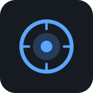

VigiMap
v2.0
📡 Sources
🔍 Requêtes
📋 Logs
📂 Importer
CV On
⚙️
Toutes sources
Tous statuts
🟢 Live
🟡 Différé
🔴 Hors ligne
Tous pays
↻ Actualiser
Live
Différé
Hors ligne
Épinglée
Match CV
📡 Sources
✕
▶️ Flux épinglés
Épinglez une caméra depuis la carte
📂 Importer un média
✕
Vidéo (MP4, MKV, WebM…)
Photo(s) (JPG, PNG, WEBP…)
▶ Analyser avec les requêtes actives
🔍 Requêtes CV
+ Nouvelle
📋 Logs détections
⬇ Export
🗑
⚙️ Paramètres
✕
🗺
Carte
▶️
Flux
🔍
Requêtes
📋
Logs